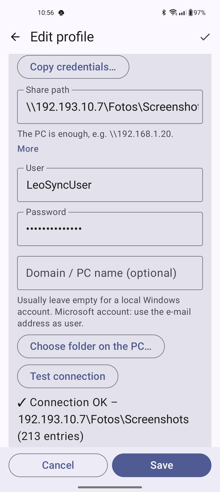
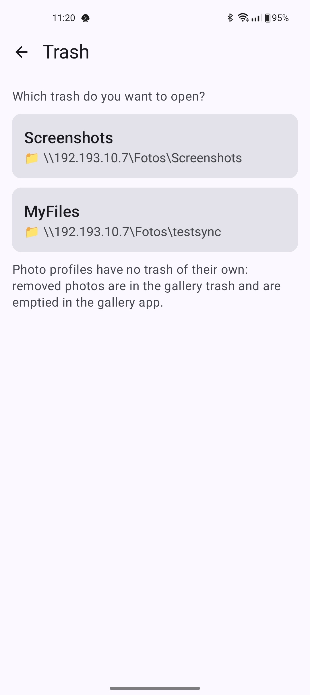
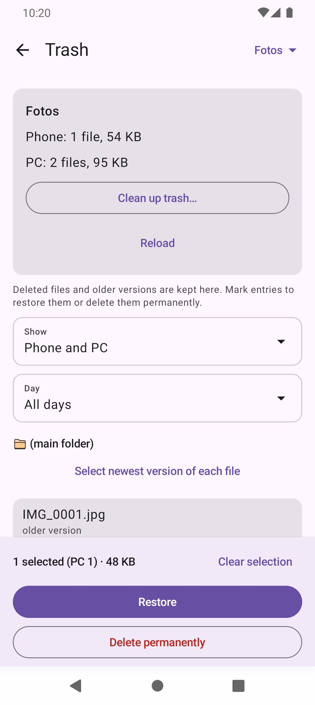
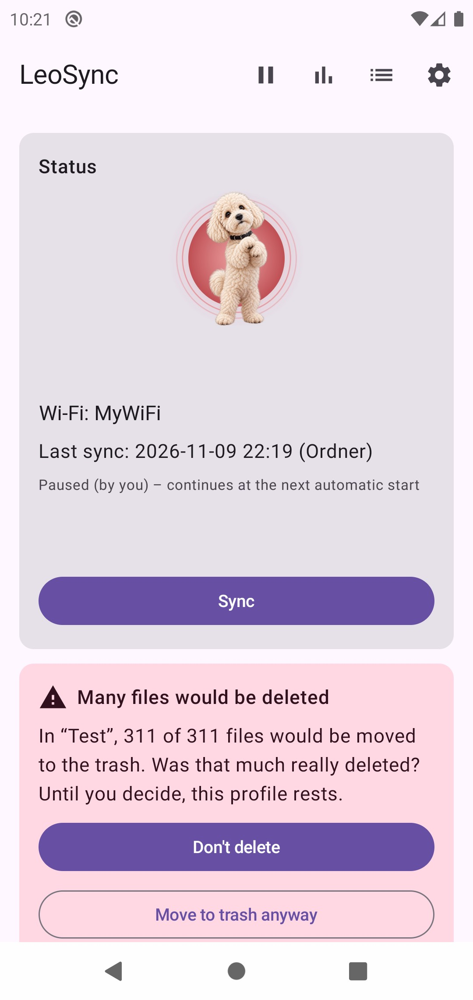
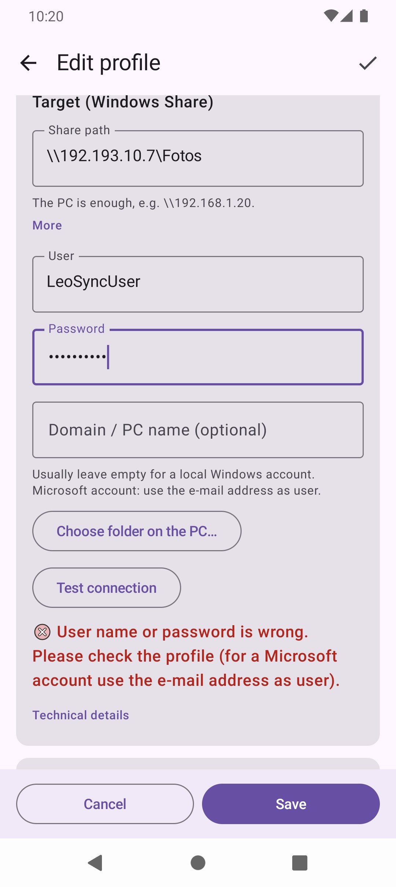
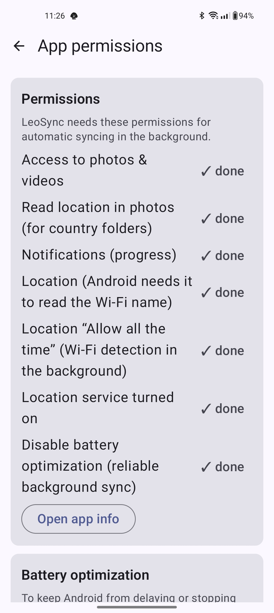

LeoSync backs up photos, videos and any folder from your mobile to your Windows PC – directly on your home network, without a cloud and without an account. Files only travel between mobile and PC.
1. On the PC: share a folder
- In Explorer, right-click the target folder (e.g.
D:\Photos) → Properties → Sharing → Advanced Sharing. - Tick Share this folder and give it a share name (e.g.
Photos). - Under Permissions, allow Change and Read for your Windows user.
- Find the PC's IP address with
ipconfigin the command prompt (e.g.192.168.1.20). Ideally, give the PC a fixed address in your router.


Create a dedicated local user for LeoSync
Instead of your normal Windows account, you can use a dedicated local user just for LeoSync. That way, your personal password (or your Microsoft account password) is not stored in the app, and the user only gets rights to the one shared folder.
- Create the user: Settings → Accounts → Other users (Windows 10: Family & other users) → Add account → I don't have this person's sign-in information → Add a user without a Microsoft account. Choose a user name (e.g.
leosync) and a password. The password must not be empty, because Windows refuses network access with an empty password.
Alternatively, open the command prompt as administrator and runnet user leosync * /add. Windows then asks for the password. - Share permission: In Explorer, right-click the target folder → Properties → Sharing → Advanced Sharing → Permissions → Add. Enter the user name, click Check Names and confirm with OK. Then allow Change and Read.
- Folder permission: In the same Properties window, go to Security → Edit → Add, enter the user and allow Modify. Windows checks both share and folder permissions, and the stricter setting applies.
- Enter it in LeoSync: In the profile, enter the new user name and its password. For a local account, you usually leave the domain field empty. If the sign-in does not work, try
PC-NAME\leosyncas the user. You find the PC name under Settings → System → About. Use Test connection to check the result.
This is what step 1 looks like in Windows (shown in German):


2. In LeoSync: create a profile
Tap Add profile and choose the type:
- Back up photos & videos – from the camera to the PC, sorted automatically by year, month and travel country (e.g.
2026\06 - Egypt). Optionally remove them from the mobile afterwards. - Sync a folder – any folder 1:1, in one or both directions.
The wizard guides you step by step through name, source, target and options. For the target, the PC is enough (\\192.168.1.20) plus user and password; Choose folder on the PC… then lists the shares and folders. Test connection shows right away whether everything is correct.
For photo profiles you choose the folder structure: Year\Month - Country (default), Year\Country\Month or Year\Month\Country. It can be changed until the profile's first sync. Several photo profiles with the same target must use the same structure.
Under PC ID you decide per profile how LeoSync recognises your PC: Wi-Fi name only (default for existing profiles), PC ID only or Both. The ID is checked before the user name and password are sent. After a change, confirm it with Test connection. The ID changes after a fresh Windows installation; then open the profile and tap Test connection again. On some NAS devices (Samba) the ID may not be stable; use Wi-Fi name only there.
Number fields in a profile only accept values in the allowed range: Empty trash after … days 0 to 3650 (0 = never), Check for changes every … minutes 15 to 1440, Safety brake 1 to 100 %. An invalid value is reported below the field and Save is blocked. For filters, a pattern with an unclosed bracket is rejected. The filter card shows a short summary, and the profile card says Filter active.
New profiles only start after you tap Sync once. You can simulate first what would happen.



3. Day to day
- Automatic: As soon as the mobile is connected to one of the entered Wi-Fi networks, LeoSync syncs in the background. Without a Wi-Fi name, it syncs only when you trigger it.
- Mobile data/VPN: Under Settings → Transfer you can allow automatic sync outside Wi-Fi as well (off by default). This can use data and, with some mobile plans, cost money, for example abroad. If the PC is not reachable, LeoSync only retries every 2 hours outside Wi-Fi.
- Only while charging: If you wish, LeoSync only syncs while the mobile is charging (Settings).
- Manual: Tap Sync or pull down at the very top of the home screen.
- Pause: ⏸ at the top right – for a while or "forever" (manual only). ▶ resumes.
- The dog shows the state: sleeping = everything backed up, running = sync in progress, standing = waiting for your decision, sitting = waiting (e.g. for Wi-Fi or the first sync).
- Free up space: In the tools on the home screen, LeoSync removes old files from the mobile that are verifiably on the PC. Each file is checked on the PC first; you choose by age, folder, file type and size and see a preview. Photos and videos go to the gallery trash.
- Backup of your settings: Profiles, settings and sync state can be exported to a file and imported again. Passwords are only included, encrypted, with an export password.
- Language: LeoSync follows the mobile's language (German, otherwise English). Under Settings → Language you can set it permanently.


4. Keeping your files safe
- Check after upload: LeoSync reads the file back from the PC and compares it with the original. The levels range from Off to Complete; the default is Medium. If photos are removed from the mobile, a check is always done.
- Trash: For folder profiles, deleted and overwritten files go to the
.LeoSync-Binfolder (on mobile and PC) and can be restored via Tools → Trash: choose the profile, select entries and tap Restore (or Delete permanently). It is emptied after 30 days (adjustable). Photo profiles have no trash of their own: removed photos are in the gallery trash. - Safety brake: If many files would be deleted at once (default: more than 20 %) or a whole folder is missing, LeoSync stops and asks you first. You then choose between Don't delete and Move to trash anyway; until then the profile rests.
- Confirm change: If you change the direction of an existing folder profile or switch on Apply deletions, LeoSync shows what changes before saving, and you confirm with Save or cancel with Cancel. With a one-way direction, differing files on the target side are replaced; the replaced version may go to the trash.
- Conflicts: If the same file was changed on mobile and PC, you decide which version wins. The other one goes to the trash.
- PC ID: When enabled, LeoSync sends the user name and password only to a recognised PC. With an unknown PC, the app does not sign in and skips the profile. The ID is not secret: it protects against an unknown server on a foreign network, not against a targeted attack.



5. Common messages
This is how a message looks after Test connection (here: user name or password is wrong):

| Message | What to do |
|---|---|
| User name or password is wrong | Check the Windows user and password. For a Microsoft account, use the e-mail address as the user. Or create a dedicated local user. |
| This share does not exist on the PC | Check the share name or pick it with Choose folder on the PC…. |
| No access to this folder | Allow Change for the user in the share permissions. |
| The PC is not reachable | Is the PC switched on (not asleep)? Is the mobile on the same Wi-Fi? Does the firewall allow "File and Printer Sharing"? |
| The PC is not recognised yet / PC unknown | No sign-in data was sent. On your own Wi-Fi, open the profile and tap Test connection. If the PC provides no ID (e.g. some NAS devices), set the PC ID to Wi-Fi name only. |
| The PC name was not found | Enter the IP address instead of the name, e.g. \\192.168.1.20. |
| PC folder not found (safety brake) | Was the folder renamed or moved? Rename it back and tap Check again – or choose a new folder. |
6. Sync stops in the background
Many manufacturers close apps in the background very aggressively. In LeoSync under Settings → App permissions, you can see which permissions LeoSync needs for automatic background sync and which are already done: access to photos and videos, notifications, location (Android needs it to read the Wi-Fi name) and disabling battery optimization. More: dontkillmyapp.com.

7. Privacy
LeoSync has no server and collects no data. Passwords are stored encrypted on the mobile (Android Keystore). Diagnostic data only leaves the mobile if you share it yourself. For details, see the privacy policy.
Contact
Questions or problems: leotools@protonmail.com. You can also submit bug reports and suggestions through GitHub Issues.